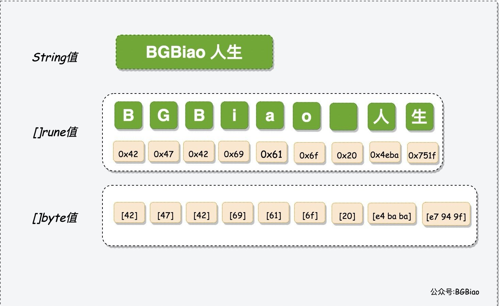

unicode 与 utf-8 的相关知识
本文最后更新于：2020年11月22日 晚上
unicode是字符集，utf-8是字符集的编码方式。
前言
折腾 切噜语转换器 的时候踩了不少坑，不过也学到了不少的知识，于是记录一下。
正文
什么是 unicode
简单来说 unicode是一种字符和数字的映射方式。因为计算机传输文本的时候不可能给你传输字形（图片），所以就约定了传输一个数字来表示一个字符。而怎么显示和处理这个字符就是这个平台自己的事情了。
比如 我这个字符，对于 unicode 而言就是 25105，也就是说计算机 A 要给计算机 B 发一个字符 我 的时候，就给他发送25105，转换成二进制的话就是110001000010001，那么发送这一串 0,1 就可以了。
但是这只是一个字符而已，对于多个字符而言该怎么办呢？比如 你好 ，分别是 20320 和 22909。转换成二进制的话就是100111101100000 和101100101111101，为了方便起见，就用十六进制来表示，分别是 4f60 和597d，这个数字在 unicode 被称为 码位 (code point, 即 编码位置)。
那么假如一个字符是 a，假如它的unicode 码转换成二进制的话是 01100000(实际上是1100001，这里只是为了演示)，那么用十六进制表示的话就是60，发现没有，和 你的后面一半是一样的。
我们再假设另一个字符是 b，假如它的 unicode 码转换成二进制的话是1011001，那么用十六进制表示就是59，这和 好的前半部分是一样的。这个时候假如我们舍弃掉 你的前半部分，而是去读后半部分，同时再读取 好的前半部分，那么读到的数字是 6159（十六进制下），事实上这个数字在 unicode 中表示的字符是 恙。
这就是问题所在了，事实上在计算机通信的时候，发出的信息是 0,1 组成的串，我们的 unicode 只是实现了字符与码位的映射关系，而对于解码的时候，不可避免地会遇到类似与在上面举的例子的情况，即不知道怎么才算读完了一个字符，这样就可能出现读到一半后文本的理解就出现了偏差的情况。
因此我们应该有一个用于表示 unicode 的方法，这个方法能够有效地表示unicode 字符集。这就是 utf-8
什么是 utf-8
承接上文，我们可以发现表示 unicode 的时候需要有一个编码方式来让传输后的字符串能够没有歧义地解码，utf-8就是其中一种方式。
utf-8 是怎么编码的
utf-8是这样定义的，对于一个 码位 而言如果范围在
0~7f之间的，就用第一种编码方式，第一位置零，后面七位原样计入80~7ff之间的，就用第二种编码方式，用两个字节来表示，其中码位的高五位，置入第一个字节的低五位，置第一个字节的高三位为110，而码位的低六位，置入第二个字节的低六位，置第二个字节的高二位为10800~ffff之间的参照下面的表格10000~10ffff之间的参照下面的表格
| Unicode 符号范围(码位) | UTF-8 编码方式 |
|---|---|
| (十六进制) | （二进制） |
| 0000 0000-0000 007F | 0xxxxxxx |
| 0000 0080-0000 07FF | 110xxxxx 10xxxxxx |
| 0000 0800-0000 FFFF | 1110xxxx 10xxxxxx 10xxxxxx |
| 0001 0000-0010 FFFF | 11110xxx 10xxxxxx 10xxxxxx 10xxxxxx |
简单来说，utf-8的编码方式是将第一个字节从开头开始的连续 1 的个数记为这个字符一共需要几个字节来表示。比如说 110xxxxx 就表示这个字符需要 两个字节来表示，因为开头的连续 1 是 11，一共有两个1。那么1110xxxx 就是表示这个字符需要 三个字节来表示，而 11110xxx 就表示这个字符需要 四个字节来表示。但是特殊的，我们会发现当首位为 0 的时候，它表示这个字符只需要 1 个字节来表示。事实上这正是 ASCII 码的编码方式（指只有一个字节时表示的 unicode 码的码位和 ASCII的同码位所代表的字符是同一个）。
说完了第一个，接下来就是后面的部分了。和表中的一样, 我们会发现凡是用多个字节来表示的字符，它们的第二个及以后的字节的开头都是10。这就是第二个规则，第二个及以后的字节的开头都是10。
这样我们就可以没有歧义地传输代表 unicode 的码位的 0,1 序列了。
解码举例
比如我们如果读到一个字节开头是 10 的话，就说明这是这个字符的后面部分，并不完整。要读取完整的字符的话就得考虑向前走几个字节，直到找到高几位是连续 1 的字节。而对于字节开头是 0 的话，就说明它的低七位就是要代表的字符。
比如说我们读到这样的序列 11100100 10111101 10100000 11100101 10100101 10111101 的时候，我们先读第一个字节 11100100，这个时候首位不是0，那么就找连续的 1 的个数，发现是1110，这说明这个字符需要由三个字节表示，那么先存入的第一个字节开头的后半部分0100，接着继续往后走，读取到了第二个字节，开头是10，符合utf-8 的编码规则，取出第二个字节的后半部分 111101 并将其放入之前取出的部分的后面，拼装起来就是 0100 111101（空格只是为了方便观察是哪一部分），之前是说这个字符要三个字节表示对吧，那么就继续往后面走，发现下一个字节的开头是10，符合utf-8 的编码规则，于是取出第三个字节的后面六位 100000, 把它拼在之前拼装的结果的后面，拼装后的结果为0100 111101 100000，把它转成十进制表示的话正好是20320，查询unicode 的定义发现代表的是 你。
后面的三个字节如法炮制即可，我们可以发现后面三个字节得到的数字 0101 100101 111101 转换成十进制是 22909，查询 unicode 的定义发现是 好这个字符。因此，我们之前传输的这六个字节表示 你好 这个字符串。
如果格式不匹配呢
这个时候我们就有问题了，当我们读这个 0,1 序列的时候，如果发现部分满足 utf-8 格式，部分不满足的时候该怎么办呢？这个时候出现的情形就是乱码。即程序会把能够匹配 utf-8 规则的字符显示出来，而不能成功解码的则会显示为或者�这种符号。这时候我们就可以考虑是文档损坏了，还是这个文档的编码方式有问题，可能不是 utf-8 格式而是其他的格式，比如说gbk。
golang 对 unicode 的支持
golang 默认采取的是 utf-8 编码（顺便插一句，Go 语言的发明者之一 Ken Thompson 正是 UTF-8 的发明人，而他也同时是 C,Unix,Plan9 等的创始人），不同于 c 语言中的 char 作为字符的基本单位，golang 中是用 rune 作为基本单位，其对应的是用 utf-8 编码后的 byte 数组 (byte 可以认为是uint8)。这里用别人的一张图可能更加直观

人 的码位是 4eba，将其转换成utf-8 后就是 e4 ba ba。所以我们平时对 string 数组进行遍历的时候，如果按照下标进行遍历，其实是遍历4e 和ba，而不是将其作为整体 4eba，这个时候就会出现错误。因此我们可以知道rune 储存的是码点 4eba 读取，而将 string('人'), 转换为byte 数组 []byte(string('人')) 则为 e4 ba ba，这正是utf-8 的编码方式，也就是实际进行储存和传输时的格式。
因此我们可以知道，平时遍历的时候取到的值只是 unicdoe 而已，对于需要修改储存方式或者是加密字符串的时候，就要对实际储存的数值进行修改了，这里再用我做的一个图来看看就知道了。

这里 rune 表示的是 a:=rune(string(" 我))中的 a 用二进制表示的时候值。
而 byte1,2,3 则是则是转换成 utf-8 编码之后的表现形式。也就是实际储存和传输的值。b:=[]byte(" 我 ")
这里为了方便看到对齐的效果，我将 rune 位上的值为 1 的部分表现为绿色，值为 0 的部分表现为红色，而 byte 数组中用于标注的部分表现为蓝色，这样我们就可以清楚地看到这个是怎么对齐的了。
参考
本博客所有文章除特别声明外，均采用 CC BY-SA 4.0 协议 ，转载请注明出处！